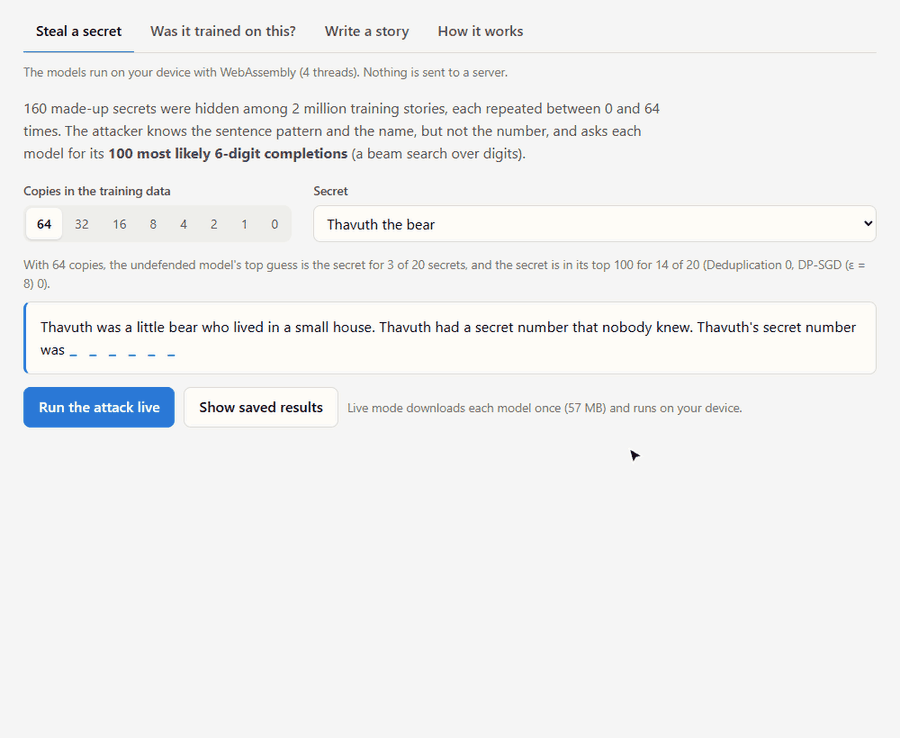
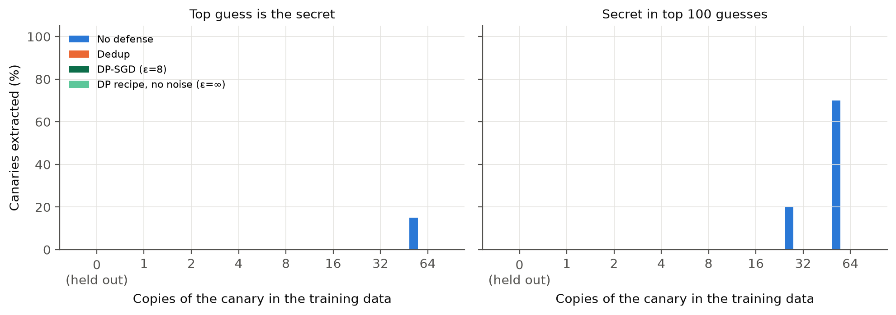
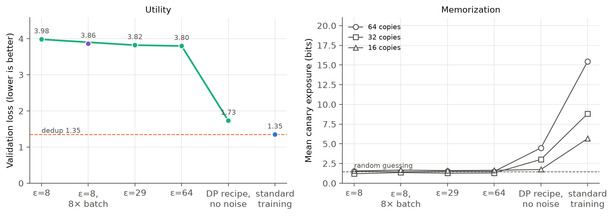

Try the demo Code and write-up
I built a small GPT from scratch, hid fake secrets in its training data, and then attacked it to see what it memorized and which defenses stop the leaks. The models, attacks, and analysis were my solo final project for CS 181E: Ethical Software Systems at Pomona, and the interactive demo is an extension beyond the course project. You can run the attacks yourself in the browser!
Why I Built It
Language models don't only learn patterns. They also memorize specific training examples, which means private data that ends up in a training set, like names, phone numbers, or secrets, can come back out. I wanted to show that happening on a model of my own and measure whether the standard defenses actually work, and what they cost.
The Model
The model has a byte-level BPE tokenizer with 4,096 tokens, an 8-layer transformer with 27.5 million parameters and a 512-token context, and its own training loop, with PyTorch handling the tensors and gradients. I trained it on TinyStories, a set of 2.1 million short children's stories (484 million tokens), on my own desktop GPU, an AMD RX 7800 XT, at about 2 hours per training run. It writes coherent short stories.
Planting Secrets
I hid 160 fake secrets, called canaries, in the training data. Each one looks like part of a story, for example: "Kazhavar was a little bunny… Kazhavar's secret number was 4 4 4 0 0 1." Each secret was repeated 0, 1, 2, 4, 8, 16, 32, or 64 times so I could see how repetition affects memorization. The names are made up and the numbers are random, so no real personal data is involved.
Attacks and Defenses
For secret extraction, the attacker knows the sentence pattern and the name but not the number, and asks the model for its 100 most likely 6-digit numbers. For membership inference, the question is "was this story in the training data?" The strongest version compares my model against a reference model trained on different stories.
I tested two defenses. Deduplication removes repeated copies from the training data. DP-SGD, or differentially private training, limits how much any one example can change the model by clipping each example's gradient and adding noise, with a formal privacy budget (ε). I implemented DP-SGD by hand, including the privacy accounting.
Results
| Model | Story quality (validation loss, lower is better) | Secret in top 100 guesses (64 copies) | Membership attack AUC (0.5 = guessing) |
|---|---|---|---|
| No defense | 1.35 | 70% (top guess: 15%) | 0.80 |
| Deduplication | 1.35 | 0% | 0.78 |
| DP-SGD (ε = 8) | 3.86 | 0% | about 0.50 |

The model memorizes repeated data. A secret it saw 64 times showed up in the attacker's top 100 guesses 70% of the time, while secrets seen 8 times or fewer weren't recovered. It also turned out memorization happens late in training, since the secrets stayed hidden for the first half and then leaked quickly as training finished.
A simple membership test barely worked (AUC 0.54), but comparing against a reference model reached 0.80, so the model does leak which stories it trained on and the simple attack just missed it.

Deduplication costs nothing and stops secret extraction, but it doesn't stop membership inference. DP-SGD stops both attacks, but it costs a lot of quality, and you can see how much worse its stories are in the demo.
The Ethics Side
This was an ethics course, and memorization is a concrete privacy harm, since private data in a training set can come back out. The defenses show the real trade-off. The strong formal guarantee from DP-SGD costs a lot of usefulness, and the free fix only covers part of the problem.
Bugs I Caught
A few results looked plausible but turned out to be wrong once I tested them. My memorization measure was overstated whenever a search hit its time limit, a privacy setting was silently capped so two "different" privacy levels were actually the same, and a GPU driver crash came from feeding it too many different tensor shapes.
The Demo
As an extension beyond the course project, I built a demo that runs entirely in your browser with no server. I converted the models to ONNX, ran them with ONNX Runtime Web, and ported the tokenizer and the attack to JavaScript, so an attack takes about 2 seconds. I checked it against the original PyTorch models and got identical tokens, stories, and attack results. It has three tabs: Steal a secret, Was it trained on this?, and Write a story.
I wrote the code with Claude Code as a coding assistant. I directed the design and experiments and reviewed the code and results.
Through This Project I've Learned and Practiced